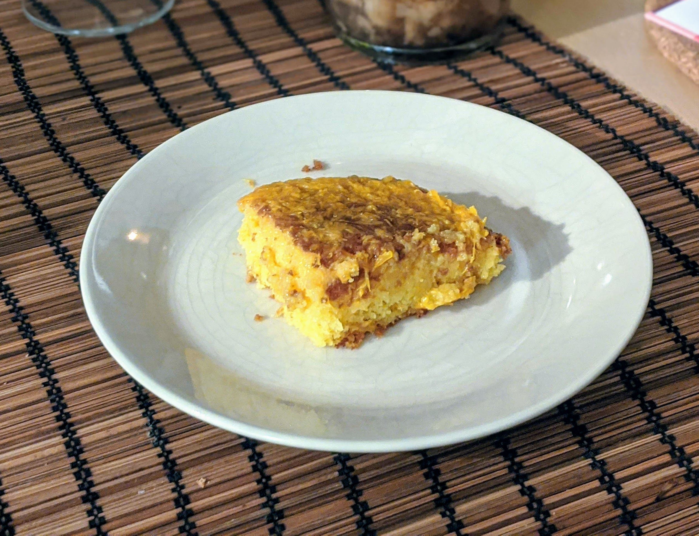

Gâteau aux oranges

Pour 6 parts (donc, 4 personnes, parce que vu que ce gâteau envoie du rêve les gens en reprennent) :
- 90g de beurre ramolli
- 115g de sucre en poudre
- 2 gros œufs
- 115g de farine (variante : ≈60g de farine, ≈55g de poudre d'amandes)
- 2 ou 3 belles oranges
- Un sachet de levure chimique
- (facultatif) Un citron
- Faire préchauffer le four à ~200°C (thermostat 6/7).
- Bien mélanger le beurre ramolli avec le sucre en poudre et les œufs. Oui c'est difficile, oui ça fait mal aux bras, mais à un moment faut arrêter de faire ta feignasse.
- Ajouter la farine, et le sachet de levure chimique. Remélanger. Et plus vite que ça.
- Ajouter le zeste d'une orange, et celui d'un demi-citron si t'en as un dans le coin. Ajouter le jus d'une orange. En profiter pour remélanger, parce qu'au fond, t'aimes ça, hein ?
- Beurrer un plat, y mettre cette pâte. Remélang... Non je déconne.
- Enfourner pendant vingt bonnes minutes. À la sortie du four, arroser avec le reste du jus d'orange (et de citron si applicable).
Remarque : pour faire plus classe, on peut rajouter des copeaux de chocolat noir sur le tout.
Retour à la liste des recettes